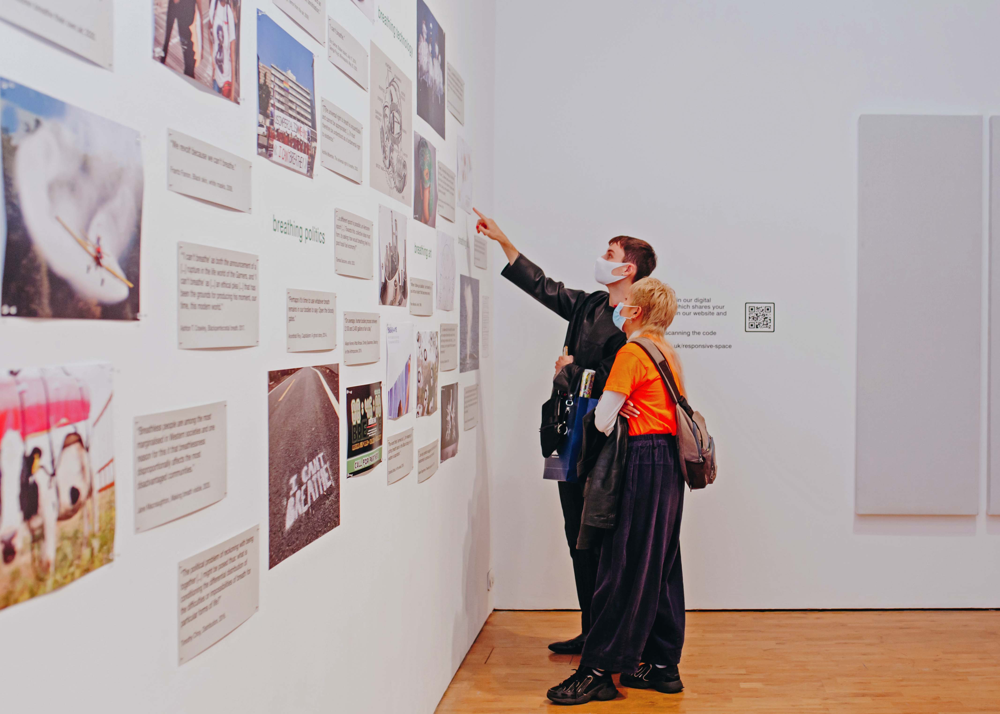

Breathing Worlds
Creative collaboration and public programming
“Breathing worlds as both noun and verb. As worlds that breathe. Worlds that were breathed into being by others. These worlds are the backgrounds that are foregrounded, only sometimes intentionally, at every inhalation and exhalation.” – McCormack and Sabin (2021)
Modern Art Oxford (MAO) is Oxford’s leading modern art gallery with a vested interest in its forward-thinking exhibition schedule and public programme. As Creative Associate (Digital), I worked with the curatorial team and cultural geographer Derek McCormack on an artistic research project entitled Breathing Worlds. Building on the success of Breathworks, Breathing Worlds entailed two research-based exhibits at MAO and two panel events.
The research-based exhibits were designed as part of the Responsive Space exhibition (2 October – 23 December 2020 and extended online until 2 May 2021). In our contribution, we wanted to bring research on breathing to a wider public in visual, spatial, and relatable ways. The first exhibit was a wall-mounted collage measuring 7m at its widest point and 3m at its highest. The collage was composed of quotations and images that we hand-picked and arranged according to themes of environment, politics, culture, and health. In addition, we co-curated a vitrine, positioned in the entrance to the gallery, with relevant books and objects from face masks to spirometers.
Due to the Covid-19 pandemic, the project was impacted by gallery closures and funding cuts. Nevertheless, Breathing worlds helped to instigate a new, interdisciplinary partnership between MAO and the University of Oxford. The public engagement aspects also sparked conversations leading to sustained partnerships. For example, an audience member enquired about activities for young people. The suggestion led to the design and development of a teaching toolkit, My Friend the Sea, in partnership with Oxford Kindness Wave for Children’s Mental Health Awareness Week.